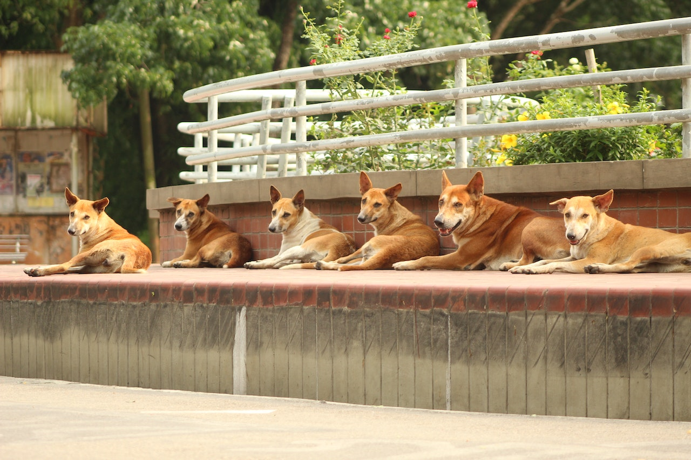

Sobre a anjos das ruas
A Anjos das ruas é um site em que ONGs e Protetores de todo o Brasil podem divulgar cães e gatos para adoção. O projeto existia informalmente desde 2012, mas em 2018 nos registramos oficialmente como uma Associação! Isso nos permite fazer grandes parcerias com empresas e estamos bem animados sobre o que vem por aí!
Como funciona
Nós não temos abrigos, e nem fazemos resgates de animais! Nosso trabalho é 100% online, oferecendo visibilidade aos animaizinhos que precisam de um lar. Funciona assim:
1- ONGs, protetores independentes ou pessoas que precisam doar um animal fazem o seu cadastro gratuitamente e no mesmo instante já podem publicar os animais com detalhes sobre suas características e personalidade;
2- Pessoas que estão interessadas em ter um novo bichinho vão entrar no site e procurar um que tenha a ver com o perfil dele;
3- Quando acharem aquele especial, elas clicam em “quero adotar” e pronto, é só combinar com a ONG como buscar o mais novo membro da família!
Quer divulgar um cão ou gato para adoção?
Se você está dando lar temporário ou quer divulgar um animal para adoção, faça seu cadastro no site e, em seguida, publique o bichinho. Coloque o máximo de características e fotos sobre ele: assim você aumenta as chances de encontrar alguém que realmente combine com seu perfil, ajudando a evitar decepção e futuros abandonos. Pelo mesmo motivo, seja sincero quanto ao estado de saúde e características do animal. Importante: este é um site de adoção e a venda de animais é proibida, ok? Usuários que tentarem vender animais serão banidos do site.
E que tal adotar um amigo?
Clique aqui para conhecer os cães e gatos que estão esperando um lar. Mas antes, leia nossas dicas sobre adoção e veja se você está pronto para receber o novo membro da família!
Siga as nossas redes sociais:
Nossas páginas no Instagram e no YouTube são puro amor!! Segue a gente lá!